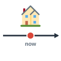
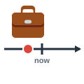
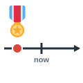
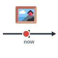
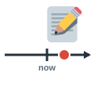

punctual
ملتزم بالمواعيد
He is always punctual for meetings.
يلتزم دائمًا بمواعيد الاجتماعات.
Time Adjectives
مرّر الماوس على السماعة أو اضغط عليها لتسمع النطق. السماعة الكبيرة نطق أمريكي (وهو المكتوب بالرموز)، وزر UK نطق بريطاني.
ملتزم بالمواعيد
He is always punctual for meetings.
يلتزم دائمًا بمواعيد الاجتماعات.
في الموعد المحدد
The train left on time.
غادر القطار في موعده.
متأخر عن موعده
This bill is two weeks overdue.
تأخر سداد هذه الفاتورة أسبوعين.

حالي
What is your current address?
ما عنوانك الحالي؟

سابق
I learned a lot in my previous job.
تعلمت كثيرًا في وظيفتي السابقة.

سابق (منصب)
She met the former president.
قابلت الرئيس السابق.

حديث
Send me a recent photo.
أرسل لي صورة حديثة.
التالي
He called me the following day.
اتصل بي في اليوم التالي.

قادم
Are you ready for the upcoming exam?
هل أنت مستعد للامتحان القادم؟
قديم جدًا / أثري
We visited the ancient temples of Luxor.
زرنا معابد الأقصر الأثرية.
حديث / عصري
They live in a modern apartment.
يعيشون في شقة عصرية.
قديم الطراز
My father has old-fashioned ideas about work.
لدى والدي أفكار قديمة عن العمل.
محدَّث
Keep your records up to date.
حافظ على تحديث سجلاتك.
قديم / منتهي الصلاحية
This map is out of date.
هذه الخريطة قديمة.
مؤقت
She found a temporary job for the summer.
وجدت وظيفة مؤقتة للصيف.
دائم
I'm looking for a permanent position.
أبحث عن وظيفة دائمة.
موجز / قصير
We had a brief conversation.
أجرينا محادثة قصيرة.
طويل الأمد
What are your long-term plans?
ما خططك طويلة الأمد؟
قصير الأمد
This is only a short-term solution.
هذا مجرد حل قصير الأمد.
عاجل
I have an urgent message for you.
لدي رسالة عاجلة لك.
مشغول
I'm very busy this morning.
أنا مشغول جدًا هذا الصباح.
متفرغ
Are you free on Saturday?
هل أنت متفرغ يوم السبت؟
ستسمع كلمة من كلمات الصفحة، فاضغط على الصورة التي تعبر عنها.
الكلمات المميزة هي كلمات هذه الصفحة. اضغط على أي كلمة ليبدأ الصوت منها ويكمل ما بعدها.
Good morning. I'm here for the job interview. Sorry, I hope I'm on time.
صباح الخير. جئت لإجراء مقابلة العمل. آسف، أرجو أن أكون في الموعد.
You're very punctual. Please sit down. Tell me about your current job.
أنت ملتزم جدًا بالمواعيد. تفضل بالجلوس. حدثني عن وظيفتك الحالية.
I work in a modern office near the river, but my position there is only temporary.
أعمل في مكتب عصري قرب النهر، لكن وظيفتي هناك مؤقتة فقط.
And your previous job?
ووظيفتك السابقة؟
My former manager ran a small company with very old-fashioned methods. We even studied ancient records from the 1950s!
كان مديري السابق يدير شركة صغيرة بأساليب قديمة جدًا. بل كنا ندرس سجلات عتيقة من الخمسينيات!
Were those files out of date?
هل كانت تلك الملفات قديمة؟
Completely. In my recent project, I brought every system up to date.
تمامًا. وفي مشروعي الأخير حدّثت جميع الأنظمة.
Good. Are you looking for a permanent position?
جيد. هل تبحث عن وظيفة دائمة؟
Yes. I want a long-term career, not a short-term solution.
نعم. أريد مسيرة مهنية طويلة الأمد، وليس حلًا قصير الأمد.
We're very busy, and our clients often have urgent requests. There are also several overdue reports. Can you handle that?
نحن مشغولون جدًا، وكثيرًا ما تصلنا طلبات عاجلة من العملاء. وهناك أيضًا عدة تقارير متأخرة. هل يمكنك التعامل مع ذلك؟
Certainly. I'm good under pressure.
بالتأكيد. أعمل جيدًا تحت الضغط.
Thank you. This was only a brief meeting. Are you free for a second interview on the following Monday?
شكرًا لك. كان هذا لقاءً قصيرًا فقط. هل أنت متفرغ لمقابلة ثانية يوم الاثنين التالي؟
Of course. And may I ask about the upcoming project you mentioned in the advertisement?
بالطبع. وهل لي أن أسأل عن المشروع القادم الذي ذكرتموه في الإعلان؟
الكلمات المميزة هي كلمات هذه الصفحة. اضغط على أي كلمة ليبدأ الصوت منها ويكمل ما بعدها.
Our city is a strange mix of old and new. In the center, you can walk among ancient walls and then step into a modern shopping mall a minute later. My favorite shop is old-fashioned, and its owner is a former teacher who is always punctual. He opens on time every morning. His current building is small, but he hopes to find a permanent home for the shop. His previous place was only temporary. The city council has made a long-term plan to protect the old streets, along with a short-term plan to repair the roads. A recent report says that the work is already overdue. The council's maps are out of date, so workers must bring them up to date before the upcoming festival. Some of the repairs are urgent, because the following month is the busiest of the year. Everyone is busy now, and few people are free in the evenings. After a brief rest, the workers will start again.
مدينتنا مزيج غريب من القديم والجديد. ففي وسطها يمكنك أن تمشي بين أسوار أثرية ثم تدخل مركز تسوق عصريًا بعد دقيقة. ومتجري المفضل قديم الطراز، وصاحبه مدرس سابق ملتزم بالمواعيد دائمًا. يفتح في الموعد المحدد كل صباح. ومبناه الحالي صغير، لكنه يأمل في إيجاد مقر دائم للمتجر. أما مكانه السابق فكان مؤقتًا فقط. وقد وضع مجلس المدينة خطة طويلة الأمد لحماية الشوارع القديمة، إلى جانب خطة قصيرة الأمد لإصلاح الطرق. ويقول تقرير حديث إن العمل متأخر بالفعل عن موعده. وخرائط المجلس قديمة، لذا على العمال تحديثها قبل المهرجان القادم. وبعض الإصلاحات عاجلة، لأن الشهر التالي هو الأكثر ازدحامًا في السنة. والجميع مشغولون الآن، وقليل من الناس متفرغون في المساء. وبعد راحة قصيرة سيبدأ العمال من جديد.